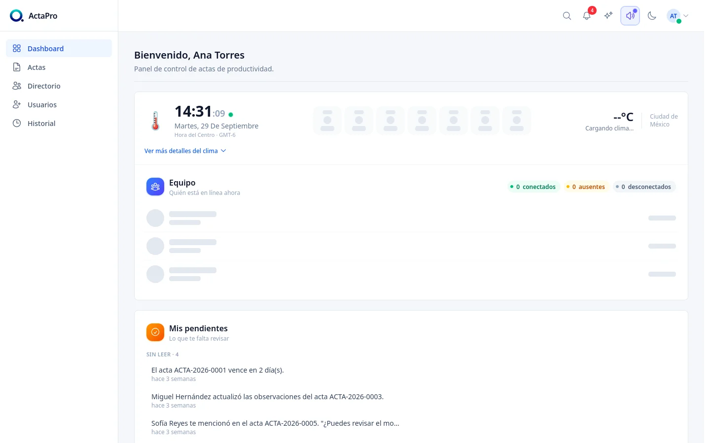
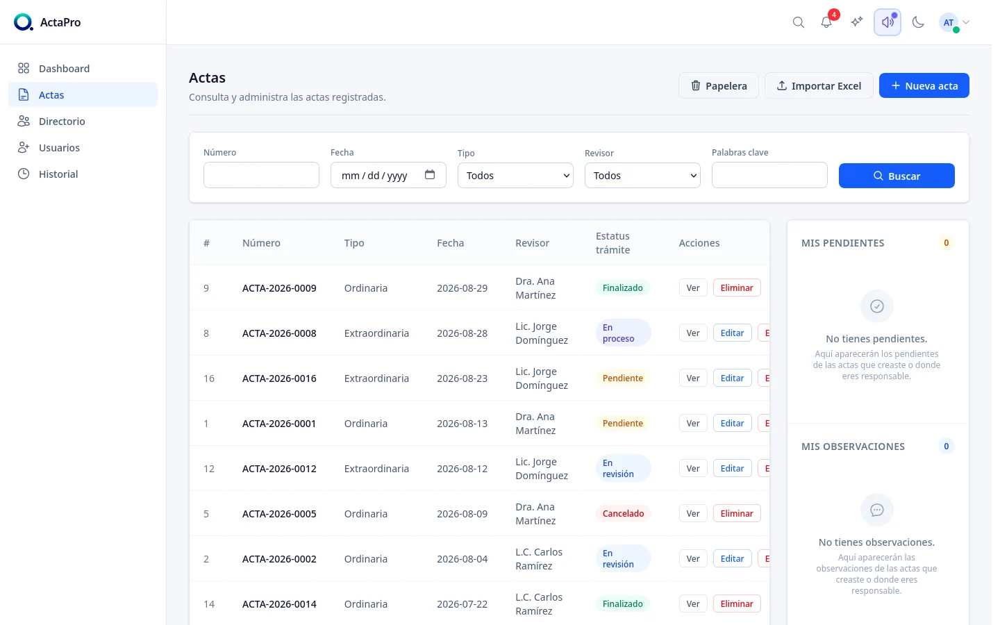
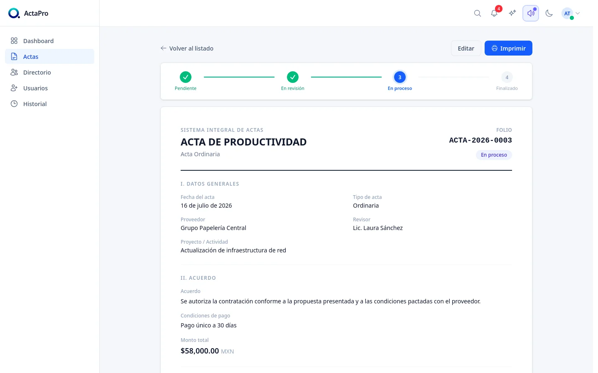
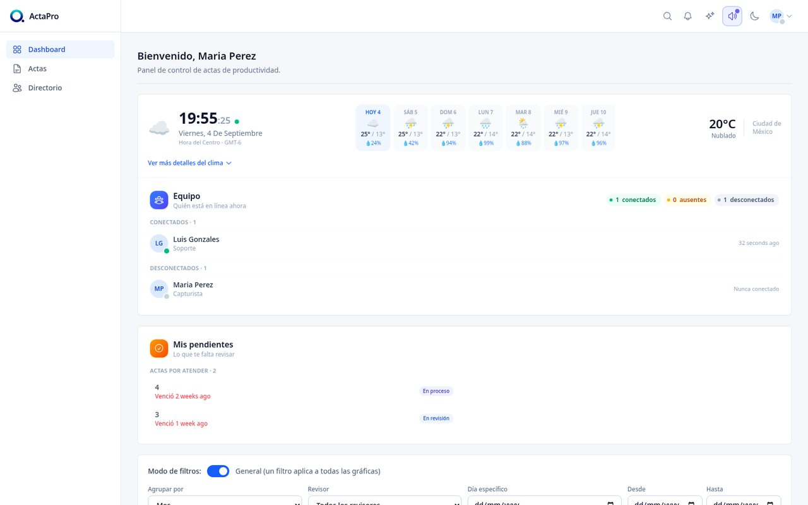

Digital Management & Governance
Minutes and procedures, with no lost folders or papers
Record, track and audit your organization's administrative minutes from a single cloud dashboard, with real-time reports and an immutable history.

The full life cycle of a procedure
From first entry to closing the file, with a complete, transparent history of every change.
Minutes capture
Record ordinary and extraordinary minutes with a unique folio, amounts, a file checklist and attached evidence in seconds.
Open items and notes
Each record has its own checklist of open items, so no detail is left unattended between reviews.
Real-time dashboard
KPIs, financial metrics and status by reviewer or department, with sortable, exportable dynamic charts.
Roles and permissions
Data clerks, reviewers and administrators: each profile with granular access and strict privilege control.
Voting and seal
Vote, sign and seal. No paper.
Take a seat on the council and put a minute to a vote. When it’s sealed, ActaPro computes its digital fingerprint: if anyone changed a single vote, the fingerprint would no longer match. Simulation with sample data.
Regular session · Item 3 on the agenda
Approval of the budget for street lighting maintenance
Passes with a simple majority: 5 of 9 votes.
Sealed
SHA-256 fingerprint
Press “Open vote” to start.
In your business
This is how it looks in the council chamber.
Minutes are drafted, voted on and signed during the session, from the secretary’s laptop. Tap a view to see it on the screen.
The platform in action
Real screenshots of ActaPro in production: a high-performance corporate experience for managing agreements and procedures.

Agreement Tracking & KPIs
Council member attendance monitoring, overdue agreement traffic lights and a real-time session calendar.

Minutes Explorer & Search
Instant lookup by folio number, date, assigned reviewer and procedure status, with Excel export.

Digital File & Ruling
Complete traceability with review status by stage, payment terms, formal agreements and official printing.
Light and dark theme
Light by day, dark by night.
ActaPro includes both themes. Drag the line to compare the dashboard in each one.

A plan for every institution
From a single-department pilot to dedicated cloud infrastructure or your own server.
Pilot
Try ActaPro in a single department, no commitment.
No setup fee
- Up to 3 users · 5 GB of evidence
- Cloud environment ready in 24-48 h
- Guided onboarding demo
- Technical support by email
- Cancel anytime
Cloud
Ollin-Tep manages all hosting and backups; your team just operates.
+ $8,500 implementation (one-time) · up to 10 users
- Institutional domain, SSL and daily backups
- Initial migration of minutes from Excel
- Ongoing training for 2 weeks
- Priority support Mon-Fri
- Continuous automatic updates
Dedicated cloud
Private, isolated infrastructure for high-demand organizations.
+ $25,000 provisioning · unlimited users
- High-performance dedicated server
- Dedicated technical account manager
- 4 business-hour response SLA
- Single Sign-On (SSO) authentication
Perpetual license
Local on-premise installation on your institution's servers.
Up to 15 users · optional annual support
- Deployment on internal infrastructure
- Delivery of compiled source code
- Optional support and patch plan (18%)
- No mandatory monthly fees
Built for teams that live by their procedures
ActaPro grew out of systematizing the real process of secretariats, boards, committees and assemblies: no more fragile spreadsheets or lost folders.
The platform puts speed, visual clarity and security first in every click, ensuring the validity and integrity of the files it produces.
Book an ActaPro demo
Try the platform live with one of our specialists.
Call or email us to schedule your demo: